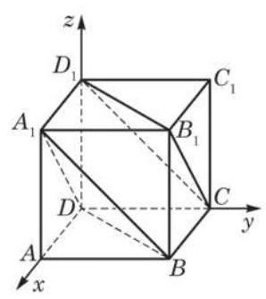

例题 1
例 1 证明: 平面上的一条直线和这个平面的一条斜线垂直的充要条件是它和这条斜线在平面上的投影垂直.
已知 如图 3-4-1, 是平面 的一条斜线, 是 在 上的投影，直线 在平面 上.
求证 当且仅当 .
教师整合版 / 沪教版高中数学
选择性必修第一册
第3章空间向量及其应用 · 保留教材主线与原题
教材与正式教参整合
空间向量常常可为解决立体几何中的有关问题提供简捷方便的方法. 在本章 3.2 节的例 2 中就非常方便地利用向量证明了直线与平面垂直的判定定理.
本节继续介绍空间向量在立体几何中的一些应用. 如下一些与直线和平面相关的向量是很重要的.
直线的方向向量:与直线平行的任何非零向量.
平面的法向量: 垂直于平面的任何非零向量.
用向量方法解决有关直线和平面的问题, 一般先把相应的问题化为关于上述这些向量的问题然后加以解决. 建立一个适当的空间直角坐标系常常是有效的辅助手段, 特别是在需要数值求解的问题上.
下面的结论是显然的:
这样, 就把直线间的平行或垂直关系化为向量的平行或垂直关系. 我们给出一个“简单”的例子——三垂线定理的向量证明， 它的关键就是把直线垂直问题化为向量垂直问题.

图 3-4-1
例 1 证明: 平面上的一条直线和这个平面的一条斜线垂直的充要条件是它和这条斜线在平面上的投影垂直.
已知 如图 3-4-1, 是平面 的一条斜线, 是 在 上的投影，直线 在平面 上.
求证 当且仅当 .
例 2 如图 3-4-2,在正方体 中, 求证:
(1) 平面 平面 ；
(2)平面 平面 .

图 3-4-2
证明(1)设正方体的棱长为 . 以点 为原点，分别以 与 的方向为 与 轴的正方向，建立空间直角坐标系, 则得到正方体各顶点的坐标如下:
据此求出直线 与 的方向向量分别为
计算得到
所以
(2)平面 与平面 有共同的法向量 ，所以这两个平面平行.
(1)两个平面垂直的充要条件是它们的法向量垂直；
(2)两个平面平行的充要条件是它们的法向量平行.

(第 2 题)
(1) 平面 ；
(2) 平面 .

图 3-4-3

(第 3 题)
例 3 如图 3-4-4,在长方体 中,
(1)求顶点 到平面 的距离；
(2)求直线 到平面 的距离.
解 (1) 如图 3-4-4, 建立空间直角坐标系, 则可得有关点的坐标分别为 、 . 所以 .
设平面 的法向量为 ,则 , . 把各向量的坐标代入,计算得到 , . 可以取 ,从而得到平面 的一个法向量为 . Q
平面的法向量不是唯一的, 所以可以给它的某个坐标一个值, 再确定其他坐标的值.
因为 ,根据上面得到的点到平面的距离公式知,点 到平面 的距离为
(2)因为 ，所以 ，从而 平面 ,问题转化为求点 到平面 的距离. 因为 ,所以直线 到平面 的距离为
如何求两条异面直线之间的距离?
求平面的平行线与平面的距离, 只要求平行线上一点到平面的距离; 求两个平行平面的距离, 也只要求其中一个平面上的一个点到另一个平面的距离.
下一道例题继续用例 2 的题设. 回忆一下, 例 2 已经证明了题中的平面 与平面 是平行的.
例 4 设正方体 的棱长为 ,求平行平面 与 之间的距离.
解 求平行平面 与 之间的距离,只要求平面

图 3-4-5
上一点 (例如 ) 到平面 的距离. 如图 3-4-5,建立空间直角坐标系, 可得点的坐标
于是
设 是平面 的一个法向量,则
因为 ,所以
不妨取 ,则 ,就得到平面 的一个法向量 . 这样,点 到平面 的距离为
因此,平行平面 与平面 之间的距离为 .
例 5 如图 3-4-6,在正方体 中, 、 分别是 的中点. 求直线 与 所成角的大小.
解 设正方体的棱长为 . 以点 为原点，分别以 、 与 的方向为 与 轴的正方向,建立空间直角坐标系,则可得有关点的坐标分别为 、 ,因此,直线 与 的方向向量分别是
从而
所以,直线 与 所成角的大小为 .
立体几何中常见的有关角的问题还有直线与平面所成的角和平面与平面所成的角(二面角). 确定这两类角的大小, 都可以通过转化为直线的方向向量和平面的法向量两个向量夹角的问题加以解决. 当然, 为得到最终的解答, 必须知道所要讨论的角与转化后的向量夹角的关系.
先考虑直线与平面所成的角. 从图 3-4-7 可以看出, 直线与平面垂线(法向量所在直线)所成的角和直线与平面所成的角的关系: 如果直线与平面所成的角为 ,那么直线与平面垂线 (法向量所在直线) 所成的角为 . 因此,如果直线的一个方向向量为 ,平面的一个法向量为 ,那么直线与平面所成的角 由如下公式确定:

图 3-4-7
例 6 如图 3-4-8,在四棱锥 中, 平面 , . 求直线 与平面 所成角的大小.

图 3-4-8
解 因为 平面 ,则可取点 为原点,分别以 与 的方向为 与 轴的正方向,建立空间直角坐标系. 作 交 于点 ，则 . 又 ,由勾股定理,易知 是等腰直角三角形,从而 . 于是,可得有关点的坐标分别为 、 ,所以 .
设平面 的法向量为 ,则 , . 即 . 取 ,从而得到平面 的一个法向量为 .
设直线 与平面 所成角的大小为 ,则
所以,直线 与平面 所成角的大小为 .

(第 1 题)
(1)求证: ；
(2)确定点 的位置，使得直线 与平面 所成的角是 .
现在考虑二面角的平面角和它的两个半平面所在平面的法向量夹角大小的关系. 如图 3-4-9, 一个平面的法向量垂直于该平面上的所有直线, 所以法向量夹角的两条边垂直于二面角的平面角相应的边. 从平面几何知道, 这样两个角或者相等, 或者互补.

图 3-4-9
因此,如果 与 分别是两个平面的法向量,那么这两个平面所成的锐二面角 (或直二面角) 由如下公式确定:

(第 2 题)
2.(1)证明略. (2)E是 的中点.
例 7 如图 3-4-10(1),在正四棱锥 中, 分别为 的中点. 若平面 与棱 交于点 ,求平面 与平面 所成二面角的大小.

图 3-4-10
解 如图 3-4-10(2),连接 交于点 ,则 、 两两互相垂直. 以点 为坐标原点,分别以 、 的方向为 与 轴的正方向,建立空间直角坐标系.
因为 ,由勾股定理,易知 ,从而可得有关点的坐标分别为 、 所以 .
设平面 的法向量为 ,由 与 ,推出关系式 与 . 可取 ,解得 ,从而得到平面 的一个法向量 .
平面 的法向量显然可取为 ,从而
所以,平面 与平面 所成的二面角是 与 (前者是锐二面角).

(第 2 题)

(第 3 题)

(第 4 题)

(第 5 题)
(1)求 与平面 所成角的大小；
(2)求 到平面 的距离.

(第 6 题)

(第 1 题)
(1)求证: ；
(2)求二面角 的大小.

(第 2 题)
2.(1)证明略. (2) .

(第 5 题)